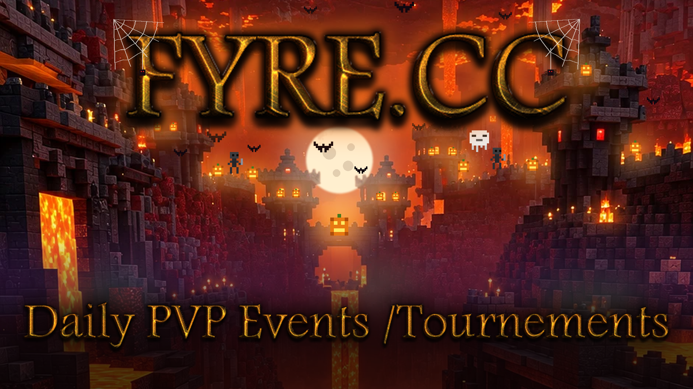

<title>Fyre Banner Board</title>
<meta name="claude:viewport-fit-sides" content="cover">
<style>
/* Layout: the two banners stacked on dark Nether stone, nothing else. Deliberately single dark theme. */
:root { --bg: #170b0b; --line: #3d1d1a; color-scheme: dark; }
body { background: var(--bg); }
main {
  max-width: 1000px; margin: 0 auto;
  padding-block: 32px;
  padding-left: max(16px, env(safe-area-inset-left, 0px));
  padding-right: max(16px, env(safe-area-inset-right, 0px));
  display: grid; gap: 24px;
}
img { display: block; width: 100%; max-width: 100%; height: auto; border: 1px solid var(--line); }
</style>

<main>
  
  
</main>
